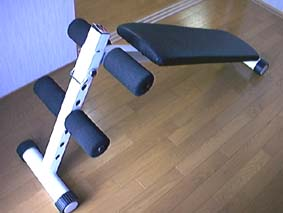
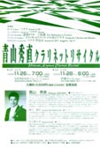

|
平成九年九月二十七日 はじめの言葉 私は小児循環器を専門にする小児科のお医者さんです。同時にPLの先生でもあります。 名前は、鈴木嗣敏といいます。小児循環器とは、生まれながらに心臓を患って生まれてくる赤ちゃんや子供達をみる人で、とてもマイナーなところです。 ホームページを今年の初めから開いて九ヶ月がたちました。今までは、自己紹介というか、名刺代わりの役割をはたしてくれたらと思って、ほとんど手を加えずやってきました。これからも基本的には同じ方針ですが、ときどきここに、ほんと気まぐれに、ちょこちょこっと感じたことなど、書いていこうかなと思います。 PLの先生で、小児循環器専門の小児科の先生なんて、この世に一人しかいません（たぶん‥‥‥）。そんな人の独り言ということでは少しは存在価値もあることでしょう。 こんなところ覗く人はほとんどいないでしょうから、そういう意味でもまさに独り言です。自分を見つめ直すきっかけにでもなれば、なんて思いもあるかな。 それではこう御期待。 平成九年十月七日 なぜ小児科？ ひとりごとだから、気を使うことなく、なんでも書いていいのかもしれませんが、 そもそも、なぜ小児科医になったのか。今まで何度となく人に聞かれてきた質問です。子供が好きだから？と聞く人が多いですが、ほんとに子供が好きな人は、小児科医にはなれないと思います。小児科医の仕事はたいていが子供を泣かせる仕事です。採血、点滴、注射をしたり、のどをこじ開けてみたり、ただでさえしんどくて病院に来ているのに、さんざん痛いことをされて、子供も大変です。私の知人にほんとに子供が好きなんだなと思う人が何人かおられますが、彼らには病気の赤ちゃんに点滴の針を刺すなんてこと、とてもできないんではないかと思います。やっている自分が残酷に思えていやになることもあります。 ではなぜ小児科を選んだのでしょうか。 おじいちゃん、おばあちゃんを診る医者になりたくなかったというのがその理由です。鳥取大学でポリクリ実習をしていた頃、学生の自分にまでペコペコして、何か引いた感じのあるおじいちゃん、おばあちゃんを見るのがつらかった。おじいちゃん、おばあちゃんには毅然としていて欲しい、そんな思いがありました。また非常に重篤で、助かる見込みが非常に薄い高齢のお年寄りに、ものすごい治療をしている現場に疑問がありました。こんな医療をしていいのか、やりすぎなのではないか、安らかな最後を迎えさせて上げたいという気持ちはないのか、などという気持ちが強くわき、こんな気持ちで医者はできないと思ったものでした。 小児科なら、子供はあっけらかんとして、相手が医者だろうが、なんだろうが、自然に接してくれる、治療をして助けてしまっていいのかなんて思わなくてすむ、子供を助けたいと思わない親なんていない、と思いました(これは実際に働きだして、相でもないことに気付きましたが。小児科医でもこの心のジレンマとの戦いは存在します)。 これが、私が六年前、大学六年生の時、小児科の道を選んだ理由です。 |
|
平成九年十月八日 なぜ小児科？その2 小児科医を選んだ理由がもう一つありました。それは、人間の体全部をみれる、ということ。大人をみる内科は、今や非常に細分化され、専門化されています。脳神経、消化器、血液、呼吸器、心臓、内分泌、などなど。小児科医は、これらに加えて、泌尿器や皮膚科、精神科、整形外科までかけもちしたりします。これは、医者を六年やってみて、やはり今でも小児科のいいところだと自分では思っています。すべてが中途半端になるというデメリットはありますが、そのへんは努力次第というところでしょう。 といった前置きをおいて、小児循環器という、心臓を専門に今は仕事をしているという話に入ってみます。 何でもみれるとはいっても、小児科も専門家の時代に入ってきています。神経(けいれんが主かな)、血液(白血病など)、内分泌・代謝(糖尿病とかね)、腎臓(ネフローゼなど)、アトピー性皮膚炎や、新生児・未熟児、感染症なとなど、大きな病院に行けばそれそれに専門の医師がいる時代になっています。とはいっても、小さな病院に行けば、なんでもかんでもみるわけですけどね。 そして、我が小児循環器内科ですが、これは生まれながらに心臓に病気をもった赤ちゃん、子供たちを専門にみる科です。 なぜ、心臓を選んだのかというと、心臓という臓器は機械的というか、物理学で考えれる臓器だからです。物理や機械、コンピュータが好きな私としては、なじみやすそうだと思って入った道でした。まわりの先生方からは、「子供の心臓疾患は、外科がメインの科だ。心臓に病気のある子供は、基本的には手術をしなければ治らない。小児循環器は、それをまわりからサポートというか、助けていく存在で、主役ではないからあまりおもしろくないのではないか。」と何度か言われたことがありますが、やってみればさにあらず、最近はインターベンションといって、風船カテーテルやコイルといった道具を使って、鼠径部の小さな傷だけで治療ができてしまう時代になってきました。こうなると小児循環器科医も、けっこう主役で仕事ができて、やりがいはとてもあります。 なんか、冗長な文章になってきたので、今日はこのあたりでおしまいです。それではまた。 平成九年十月十日 しかし、最近は心臓の子だけをみているという感じで、ともすると小児科医としての一般常識が頭から抜け落ちそうで、少しこわいです。心臓の赤ちゃんといっても、心臓以外の問題が出てくることもあるわけで、黄疸が強いとか、皮膚の湿疹がひどい、とかいうと、「俺の管轄ではないから」なんて気持ちが少し出てきそうになっている自分に最近気がつきます。気をつけねばと思います。 話はがらっとかわりますが、小児科をしていて感じることは、疾患によってお母さんのタイプがはっきり分かれており、それぞれに特徴があるという事です。これは、書き出すと長くなるのでまた今度ということにしておきましょう。 ホームページにアルバムのページを作りました。古い写真をかき集めてスキャナーに流し込んでいきましたが、写真ではきれいに撮れていても、ページにのせてみるとどうもさえないというものも多いようです。 |
|
平成九年十月二十二日 このページのタイトルは、「ひとりごと」としていたのですが、父親から「でんでん虫の独り言」のコピーだとクレームがつきました。 タイトルを何にするかは、非常に悩んだのですが、なかなかいい考えが浮かばず、確かに使わせてもらった、という感じでしたので、これを機会にもう一度タイトルを考えてみました。 それでこのタイトルです。「所思雑感」こんな言葉は、広辞苑にも出てきませんし、造語だと思いますが、今までの文章を読んでみると、独り言というよりは、こんな感じかな、と思うので、こちらに変更です。 今日はこれから、抄読会といって、英語の論文をみんなの前で読まなければいけないので、その準備に入ります。
平成九年十月二十四日 読売新聞の朝刊にこんな記事がありました。
これは面白いなと思いました。天理の先生だからこその切り口なのでしょうか。PLあがりのの小児科医としては、やられた!!という感じです。 アトピーだから過剰防衛に走るのか、過剰防衛に走るからアトピーになるのか。 アトピーの子供を持つ母親は(ときどき父親のこともありますが)、「アトピーだから、防衛しているのだ」と当然のように答えるでしょう。しかし、さぁ、どうだろう、そんな簡単な問題かなと思います。 PLの教義の中に、「子は親の鏡」というものがありますが、親の気持ちで子供がかわる、ということは、小児科医としてもよく感じるところです。具合の悪い子供と、そのお母さん、小児科医をしていると、このコンビに数限りなく出会います。子供と母親の様々な関わりをかいま見ながら、「子は親の鏡」という言葉を思い出すことも少なくはありません。 |
|
平成九年十月二十七日 今の病院で私が所属している科は、心臓センター小児部といって、心臓病の子供だけ、しか見ていません。今までの病院では、風邪の子も、喘息の子も、熱性痙攣の子も、なんでもみていたのですが、今の病院では、そういう患者さんは小児科にいくことになり、私のところにはきません。 これは、心臓病に専念できる、という意味では精神的に楽でもあり、ありがたいことなのですが、やはり時にはいろいろな病気がみたいという気持ちがわいてきます。 子供のこと、体全体､どこでも診れる、そして心､気持ちのケアもできる小児科医でありたいものです。 平成九年十一月十七日 父親が短歌をしている影響で、私も大学生の時､短歌を作っていたことがあります。最初に作った短歌を父親にほめられて、うれしくなって少し続けていたという感じでしょうか。毎月10首作るのですが､その締め切りが近づいてくるのがつらかったものです。 心に何を感じているのか、わからなくなったまま、毎日過ごしているのかなと、最近反省した次第です。 平成九年十一月十八日 今、県立尼崎病院の心臓センターの外来です。外来の合間にこの文章を書いています。 外来というのは、不思議なところです。病棟で困ったことがあっても、誰かに聞けますが、外来では一人です。短時間に一人で判断しなければいけません。責任は重大です。そして、いろいろな人との出会いがあります。出会いの中で、自分の頭の中身を振り絞って、外来を進めていくのです。 昔、石垣島で週四回の外来をさせていただいていました。このときは風邪の子どもが大半でした。数も多く、大変でしたが、今までになかったことが学べ、外来の中に医者としての仕事の妙味があるなと感じたものです。 その後、外来がしたいという気持ちはありましたが、その機会がないまま、数年を過ごしましたので、県尼で、外来ができる、しかも心臓の専門外来!!ということで、喜びと、そしてそれよりも遙かに大きな不安で頭の中が一杯になったものです。 心臓病の人ばかりが集まるというプレッシャーの中で、いろいろなお母さんたちとの会話、子供の様子から、次どうしたらよいかを判断しなければいけません。非常にきついチアノ－ゼの赤ちゃんをどういったところに注意をしながら診ていけばいいのか、最初はわからないことばかりです。こんなこと、俺に任せていいのか、という気持ちで一杯になってしまったこともあります。 次の日が外来と思うと、前の日から気が重いことも多いのですが、外来が終わると、ああ今日も外来が終わった、という充実感で一杯になります。 外来をしていて困ったこと、疑問に思ったことを解決するために勉強しながら、外来ができる今の環境のありがたさを感謝している今日この頃なのでした。 先週はものすごい患者さんの数で、疲れ果てたのですが、今週は打って変わってとても少なく、気持ちが楽にできた外来でした。 やはり患者さんがたくさん待っているときは、一人一人にあまり時間がかけられませんし、ゆっくり話を聞いてあげることもできません。あまり少なすぎても寂しいといったぐあいで、ちょうど良い具合というのは難しいものです。 |
|
平成九年十二月二日 体重 高校を卒業したとき、私の体重は58kgでした。その後、浪人時代に10kg増加し、大学でクラブをしているときは5kg減って、卒業時にはまた5kg増えてました。つまり、大学卒業時点で68kgです。 失恋すると64kgまでへったり、いいことがあると70kg近くなったり、心と体重との間には相関関係があるようです。しかし、仕事がどんなに忙しくても絶対減らない私の体重には感心するやらあきれるやら、大したものだと感心してしまいます。 今はついに70kgを越えてしまいました。越えた状態が数ヶ月続いているので、これはみずぶくれではなく脂肪がついたのだな、俺はまた太ったのだなと、最近認識しました。そして、 小児科医は、がりがりよりも少し太っていた方がいいんだよ、お母さんはがりがりの人に診られるよりも、少しふっくらした人に診てもらった方が安心するんだから、などと訳の分からないことを言ってみて、気を慰めているわけです。 心臓カテ－テル検査をするときに、放射線防護のために着る服は、非常に重く、腰に悪いようです。体重が増えると、二重に腰に悪いようで、時々グキッときます。やはり体重は60kg台に落とさねばと、インターネットでダイエット方法を検索したりなどする今日この頃なのでした。 平成九年十二月十八日 まだ医学生だった頃、ポリクリで病棟を回りながら、医者は患者を診ないで、病気を診ている、これは間違っている、という気持ちがよくわき上がってきたものです。俺は医者になったら、絶対病気を診る医者にはならないぞ、患者の気持ちを常に忘れず、患者の心に思いを巡らせ、心と体をバランスよくみれる医者になるんだ、なんて、考えていたものです。医師免許をもらい、最初の頃は常にこの気持ちは私の心の中にありました。しかし、悲しいかな、だんだん環境に慣れ、仕事に慣れ、そういう気持ちは薄れていくもののようです。しかし、これまで6年間医者をしてきて、この気持ちが薄れるたびに、この気持ちを思い出させる事件が起こります。最初の事件は、医者になって8カ月が過ぎた冬のある日、看護婦さんと同僚の医者と飲みに行った時のことです。 ほろ酔い気分で、看護婦さんたちに、普段はいえない文句や、こういうところは気をつけたほうがいい、なんてことを、みんないってみて、という話になりました。すると、看護婦さんたちは実に耳の痛い、酔いなんて吹っ飛んでしまうことを次々に語り始めました。その中の一人が、「先生は、最初の頃は頻繁に患者さんのところに通い、時には子供の遊び相手になり、母親の愚痴を聞き、いやな顔ひとつせず、病棟内を走り回っていた。あのころの先生は光っていた。でも今は違う。詰め所の中で雑談ばかりして、今の先生は完全にくすんでいます。」 この言葉を聞いたとき、私は「あぁ、俺は病気しか診ない医者になっていたなぁ」と、脳天を割られたような気持ちがしました。あの看護婦さんは、あのときよくあんなことをいってくれたなぁと、今でも感謝しています。(ちなみにその場は、そのとおりだとすっかり納得してしまった私に対して、そういうところがいけないんだ、なんで言い返してこないんだ、といわれ、その言葉にカチンときて、そのまま本当に喧嘩になってしまったのですが。それはご愛敬といったところです)。 実は、一昨日、またこの初心を忘れていたと、まざまざと思わされた事件がありました。今は事件の真っ最中なので事件の内容は書きませんが、こういうことが起こると、私は普段すみにいってしまっている「神に祈る気持ち」を思い出します。あぁ、かみさまが思い出させてくださったんだなぁ、といったところです。 平成十年一月四日 医者になって六回目の正月を迎えました。今まで正月といえば当直当直で、のんびりと正月を家で過ごしたことなどありません。 おせち料理は、病院で看護婦さんたちからおすそ分けしてもらい、お雑煮は大好きですが、最近はのんびりたべたこともないなぁと思います。 今年は医者になって初めて、年末年始に当直がありませんでした。自分の担当日は決まっているのですが、それも正月三が日には当たっていません。あぁ、今年はのんびりと過ごせるのかな、とうれしいやら、ほんとに休んでいいのかなという戸惑いやらで休みに入りました。 しかし、世の中そんなに甘くはないようです。終わってみれば、今までで一番過酷でハードな正月となってしまいました。 年末は外来で診ている患者が風邪だ、喘息だ、気管支炎だとやってきました。そこはなんとかしのいだのですが、元旦、早朝から入院中の赤ちゃんが急変したと呼び出され、なんとか落ち着いたと思って、その夜、僅かな時を実家で過ごせたと思ったらまたポケベル、さらに患者が急変したとの連絡で、その夜は寝ずの治療を続けて、そのまま二日三日と時は流れて、今日はもう四日です。明日からは通常勤務かと、なんともいえない疲労感と妙な充実感を感じながら、夕方の医局でキーボードをたたいているというわけです。 しかし、こんな生活を送っていても、患者がなんとか命を取り留めて、回復に向かってくれれば、こんなにうれしいことはありません。また、患者が悪いときには、お父さんやお母さんには極めてきつい話をせざるを得ず、親に涙を流させることもしばしばで、これほどつらいことはないわけですが、よくなってきたときのご両親の顔を見ると、よし頑張るぞ、という気持ちがわいてきます。 両親と少しでも気持ちが通いあいながら医療が行えれば、こんなに充実感のある仕事はない、こんな仕事をさせていただけて、ありがたいなぁと感じます。 しかし、逆に言えば、両親と気持ちがかみ合わない時は、なんとも悲しい気持ちです。どんなに一生懸命患者を診ても親と心が通いあわないと寂しいものです。訴えるぞ、なんて言葉を吐かれると実に寒々しい気持ちになります。 実は年末にそんな言葉をさんざん浴びせられたことがありました。この時はひとしきり落ち込みましたが、これもまた勉強だ、気持ちを引き締めろと言うことだと自分に言い聞かせていた矢先、この正月の赤ちゃんのご両親との間に感じることができた気持ちの通い合いは、かけがえのない新年早々の神様からのプレゼントだったと思います。 今年は、「赤ちゃんや子供たちとはもちろんのこと、そのお父さんお母さんとの心の通い合いを今までにも増して大切にした医療」をしっかり肝に銘じて、やっていきたいと思います。 |
|
平成十年二月四日 一月は、大変な月でした。県尼での生活は、一月と六月が伝統的に忙しいようです。これは、学会がこの時期にあり、そこで日頃の研究や珍しい症例などを発表しなければならないためです。 もちろん、通常の外来や心臓カテ－テル検査などは普通にこなしながらのことなので、極めて多忙、ということになるわけです。 今年は、受け持ち患者の状態も悪かったため、一月中旬の抄録挺出と、一月末の発表二つの準備で、十二月中旬から一日の休みもない毎日が続きました。発表前日からインフルエンザで発熱してしまい、まさに身も心もぼろぼろという感じでしたが、終わったときの充実感は心地よいものです。 二月はこの勢いで、たまっている論文を書き上げてしまおうか、などといつものように気持ちだけは未だ冷めやらず、ですが、この意欲がいつまで続くものやら、みものですね。 一月は、大変な月でした。県尼での生活は、一月と六月が伝統的に忙しいようです。これは、学会がこの時期にあり、そこで日頃の研究や珍しい症例などを発表しなければならないためです。 もちろん、通常の外来や心臓カテ－テル検査などは普通にこなしながらのことなので、極めて多忙、ということになるわけです。 今年は、受け持ち患者の状態も悪かったため、一月中旬の抄録挺出と、一月末の発表二つの準備で、十二月中旬から一日の休みもない毎日が続きました。発表前日からインフルエンザで発熱してしまい、まさに身も心もぼろぼろという感じでしたが、終わったときの充実感は心地よいものです。 二月はこの勢いで、たまっている論文を書き上げてしまおうか、などといつものように気持ちだけは未だ冷めやらず、ですが、この意欲がいつまで続くものやら、みものですね。 平成十年二月二十五日 はやくも二月が終わろうとしています。なんだかすこし暖かくなってきました。 梅もちらほら咲いているのをみかけます。 論文は書こう書こうと思いながら、なかなか進まずもんもんとしています。 心カテをこなしながら、時間がたっていくという感じでしょうか。もっと時間を有効に 使わねば、と思います。 平成十年三月二日 尼崎に引っ越しして、自転車での通勤を始めました。十五分ぐらいの運動でとても気持ちよく通勤していますが、最初はなかなか大変でした。 一番困ったのは、コンタクトレンズです。尼崎はホコリが多いのか、コンタクトレンズをしていると、三分も走らないうちに目にゴミが入ります。目をしょぼしょぼさせながら片目運転していると、二、三分以内に残された目にも見事にゴミが入り、哀れ進むこともできず、そこに立ちつくすわけです。自転車にまたがって仁王立ちして、両目からボロボロと涙をこぼしうつむいている姿はかなり異様だろうと思います。結局両目のコンタクトレンズをはずして、ということが四、五回あり、何かいい方法はないかということで、サングラスを購入しました。できるだけ目を覆ってくれる、ゴーグルのような形のものを探しだしてきて、意気揚々と出かけたわけですが、これがまたまったく使えない代物でした。目に当たる風は明らかに減るのですが、サングラスの縁からわずかに入り込んでくる風とホコリが、目とサングラスの間で渦をまいて、なんと今までよりもよけいに目にゴミが入るようになったのでした。 結局、コンタクトレンズをはめて通勤するのはやめにしました。 では眼鏡をかけて、ということになるのですが、このめがね、大学生の頃からの、すっかり時代遅れの黒縁めがねで、しかも両眼視力がまったく違うために、少し視線がずれただけでも目がくらくらします。 もう、眼鏡もやめだ、というわけで、今はぼんやりとモネの抽象画のように広がる世界をのんびりと自転車こいで病院にやってきているわけです。 そんな危ないことを、と誰もが思うでしょう。私も思います。でも抽象画の中に浮かぶ信号も百メートル先くらいまではイガイにも見えており、近くに寄ってくる人や自転車や車の気配くらいは、注意していればけっこうわかるもので、今ではすっかりこれが気に入ってしまっているというわけです。 ぼんやりした世界に毎日十五分浸っていると、今まで視界良好だったときには見えなかったものや感じなかった雰囲気をあちらこちらで感じます。もともとコンタクトや眼鏡なんて便利なものがなければ、これが僕にとっての本来の世界なのだなぁ、などと考えながら、通勤しています。 平成十年三月五日 先日、少し時間があったので、映画のタイタニックを見にいきました。 とても前評判が高く、宣伝を繰り返していて、封切られても連日超満員だった映画ですが、こういう映画は期待して見に行くと、えてして裏切られ、がっかりして帰ってくることがあることは、以前ロストワールドを見に行って痛感したことです。しかし、タイタニックは違いました。 三時間十四分という長時間にも身構えてしまいますが、終わってみると見事なぐらいあっという間でした。 最初からスピーディな展開で圧倒的な船の大きさは見事なまでに演出されており、まったく退屈感を感じないままに後半の転覆シーンへ話は進み、すっかり世界に引き込まれたまま、エンディングでは涙がぽろぽろ出てきて、挙げ句の果てに、コンタクトレンズがはずれてしまいました。 今まで映画を見て泣いたことは二、三回ありますが、コンタクトレンズがはずれたのは初めてです。 タイタニックがDVDで出たら、その時にこそDVDを買うぞ、などとまた悪い癖を出しながら、映画館を出てきたことでありました。 |
|
 平成十年三月二十日体重増加、とどまるところを知らず、ついには74kgの大台を突破してしまったため、またしても、緊急ダイエットを決意するに至りました。いつもうやむやになってしまっている反省から、今回はこんな腹筋マシーンを購入し、本気で体を引き締めるつもりになっています。 しかし、十日が過ぎても体重は微動だにせず、こころなしか増えているような気さえして、これはついに酒をやめるしかないのか、と少し悲しくなってしまいます。まぁ、あせらずのんびりといきましょう。 |
|
平成十年四月九日 生まれたばかりの心臓病の子供の入院が増えてきました。こうなると、多忙に拍車がかかってきます。 今年は心臓病の赤ちゃんが多いような気がします。こういうことははっきり統計に出したりはしないのですが、この三ヶ月を振り返ると、けっこうなペースで入院があります。 なにか原因があるのかな、など考えながら日々診療に勤しんでいます。 腹筋腕立ては続いていますよ。でも体重は減りません。お腹のお肉は少しましになったかな!?! 平成十年四月二十三日 両親に最初にする話は、たいがいかなり厳しい話になります。両親の気持ちを考えると、どうしても、軽いように、よいように、しゃべってしまいそうになりますが、そこは心を鬼にして、たいていは両親に涙を流させるような、話になります。 こういうことを繰り返していると、だんだんと機械的にしゃべるようになっている自分に気づきます。そういう自分はいやなものです。両親は今、どんな気持ちなのか、どんな心なのか、という両親へ向ける気持ちを忘れることなく、日々暮らしたいと思います。 |
|
平成十年四月二十四日 最近、私の周りの人たちが感情を私にぶつけてくる場面によく遭遇します。なんでそんなに感情をむき出しにして!?!という思いで一杯になって、そういう時私は言葉を失ってしまいます。そしてなんともいえず悲しい思いに心を占領されてしまいます。 しかし、振り返ってみると、例えば父親や母親、自分の周りの人たちに、私は自分ではまったく気づかぬままに、感情でしゃべることがよくあったんだろうなぁと、今日、思いました。 「つぐとしは、一番の急所、言われたくないところを狙いすまして突き刺してきて、ぐりぐりとほじくるようなしゃべり方をすることがある」と、大昔にある人に言われたことを思い出します。 思えば、今自分が受けていることは、そういうことの鏡なのかもしれません。これから結婚して子供ができて、その子供たちにこんな心癖が流れていかないようにしなくては、などと今まで思ったこともないことを考えます。ありがたいことだという感謝の思いがわいてきました。 平成十年七月七日 えらい長いこと、更新していませんでした。上の日付を見てびっくりしてしまいしまた。まぁ、それだけ忙しかったということにしておきましょう。 今、外来の合間です。 平成十年七月二十一日 上の文章は、このあと患者さんがたくさんきて、結局しりきれトンボになってしまいました。外来の合間に書いて、ライブ感を出そうという思惑はみごとはずれてしまいました。 あわただしく毎日が過ぎています。仕事しかり、プライベートしかり。 また、余裕が出来たら、いろいろ書きたいと思います。 |
|
平成十年八月五日 八月一日、PL花火に行きました。医者になって初めて、八月一日が土曜日になったので、病院は休みをもらって出かけたわけです。 PL花火とは、幼い頃からの長いつきあいです。幼稚園のころは、あの花火は怖かった。アイスクリームが食べたいのに、音が怖くて怖くて、親に耳をふさいでもらいながら、アイスクリームを食べ、花火を見ていた記憶があります。 高校生の頃といえば、花火が終わった翌日、ゴルフ場いっぱいに散っている花火のガラ拾いを朝早くから総出でやって、これが終われば帰省・夏休み、という半分辛く、半分うれしかった気持ちを思い出します。 大学時代は、炎天下の中、バスの駐車場づくりや会場づくり、花火現場のゴルフ場の警備などに奮闘していました。警備は24時間体制で、真夜中のゴルフ場を一人で歩くなんてことは、普通は体験できません。いろいろな怪談や逸話が毎年誕生していたものです。 医者になってから5年間のブランクがありましたが、PL花火とともにずっと育ってきた思い出をまざまざと思い起こしつつ、式典に参列し、御正殿前から花火をみさせていただきました。 ありがとうございました、という気持ちです。 |
|
平成十年八月八日 今日、甲子園で、桜美林高校が勝ちました。桜美林高校は、二十二年前に初出場で初優勝しており、それ以来二十二年ぶりの勝利だそうです。この二十二年前の初優勝の時、決勝の相手はPL学園でした。このとき私は小学校4年生です。閃光のような記憶が残っています。それは、三塁側のアルプススタンドから、レフトのフェンスに直撃するボールと、懸命にボールにとびつく選手、そしてホームベースに駆け込む桜美林の選手の姿。たしか、サヨナラ負けをしたのだと思います。そして、あの校歌をアルプス席で聞いたのです。ものすごい悔しさの中で、この曲は頭の深いところに刷り込まれたのでしょうか。 以来22年の間、聞いたことがないはずなのですが、桜美林の校歌斉唱と聞いて、「イエス・イエス・イエスと、‥‥‥」というサビの部分を口ずさんでいる自分に驚きました。そしてその通りのメロディが甲子園に流れたとき、何とも不思議な思いにおそわれました。 私は記憶がきわめて苦手です。中学生の頃から英単語が全く覚えられず、その極端な記憶力の悪さに自分では気付いていました。大学生の頃も、アルツハイマーではないかと心悩ませながら、なんとか試験をクリアしていったものです。そんなこの頭の、どこに小学校の頃一度だけ聞いた校歌をメロディごと覚える隙間があるのだろうと思います。記憶、とは簡単なようで、実はきわめて複雑です。脳のこの部分が記憶を司っているのだ、などと医学者は分かったようにいいますが、本当はどこに蓄積されているのか、実は脳の外にあったりして、などと思ったりもします。 ふとよみがえってきた記憶に正直驚かされた出来事でした。 PL学園 対 桜美林、見てみたいです。二十二年前の雪辱をはらすことはできるでしょうか。 |
|
平成十年八月二十日 今日は、PL学園 対 横浜の、準々決勝戦でした。仕事をしながら、気になって気になって、患者さんのところでちょっとテレビを見たりなどしていましたが、延長戦になってからは、仕事そっちのけで、テレビに食い入るように見てしまいました。病棟の看護婦さんたちも知ったもので、「今、鈴木先生は野球を見ているだろうから、用事で呼ぶのはちょっと待とう」などと考えてくれていたそうです。 しかし、すごい試合でした。私は、小学校のころからアルプススタンドで人文字に入って応援しており、高校生の時は、一つ下の学年に桑田・清原がいたこともあって、春・夏すべての甲子園大会に応援にいったものです。胸をしめつけられるような気持ちで応援していたあの頃の気持ちにすっかり戻っていました。 本当に命がけで、一生懸命せめぎあう姿に圧倒されて、午後からは少し放心状態でした。すばらしい感動をありがとうございました。 |
|
平成十年九月十一日 先週、土曜日、九月五日に、神戸の湊川神社で結婚式を挙げさせていただきました。前日などはすっかり涼しくなっていたのですが、当日は強い日差しで、一日だけ夏が帰ってきたかのようでした。 あるお方がお祝いの短歌を式の数日前に送ってくださったのですが、まるで式に参列されて作られたかのように、式当日の雰囲気をかもしだしています。よく読むと、鈴木嗣敏・大友晴子の字が織り込まれており、読むほどに心に深く広がります。 凛々と鈴の鳴る丘木漏れ日の賑おう森に気は張りつむる 父母(ちちはは)の思い嗣ぐべき心意気 大いなる友というべき伴侶得て空あくまでも青き門出や 鈴の鳴る丘の木立の空晴れてあな賑々し呼子鳥(よぶこどり)啼く 仲人はたてず、この半年間ふたりで準備をしてきました。非常識なことや世間知らずなことを繰り返しながら、やっとの思いで当日までこぎつけたという感じです。 当日は、あれよあれよという間に、いろいろ考える間もなく過ぎ去っていきました。 披露宴では、気仙沼の馨叔父さんの、先祖の話など多岐にわたる話から始まり、郡山、奥正、田中のおじちゃんの祝辞をいただき、三觜の替え歌では、場の雰囲気が多いに盛り上がりました。 新郎の席というのは、全体が見渡せて、妙な場所でした。あぁ、あそこのテーブルは、楽しそうにやってくれている、とか、あの先生は退屈していないだろうか、とか、場の隅々まで見渡せるために、いろいろとよけいなことまで考えてしまいます。 妻はとなりで、箸に手をふれることなく終止ニコニコしていましたが、内ではかなり疲れていたようで、披露宴が終わってみんなが帰られたあと、頭痛と疲労でホテルで倒れてしまいました。大変な思いをしていたのだと思います。 式や披露宴の準備をしながら、そして披露宴でいろんな方々の気持ちに触れながら、みんなに支えられて生かせていただいているんだなぁと、感謝の気持ちで胸がいっぱいでした。この感謝の気持ちを大切にして、これからはふたりで頑張っていきたいと思います。 今回の、式・披露宴で一番大切にしたかったことは、お互いの両親への感謝の気持ちです。大友のお父さんが、いい式だったといってくださった時はうれしかったです。自分の父親が最後に感謝表現をしたときは、初めて涙がでそうになりました。これからもいろいろ両親には心配をかけると思うと、心苦しいばかりですが、ほんの少しは恩返しさせていただけただろうかと、一週間たった今、振り返る次第です。 |
|
平成十年十二月二日 高野山 先日、二人で高野山に行って来ました。 車で行くと二時間半ほどですが、かなりの山道で疲れるので、今回は難波から出ている特急高野で行きました。これだと難波から一時間半で高野山です。 奥の院という一番奥まったところに空海が祀られていて、秀吉や織田信長ほか、様々な歴史上の人たちのお墓が並んでいます。ふとぶとしい杉が立ちならび、ひんやりとした空気を感じながら石畳を歩いていると、心が落ち着きます。 何があるというわけでもないのですが、行くと落ち着くというだけの理由で、時々思い出したように参拝しています。ほとんど僕の趣味のようなものなのですが、彼女も高野山に行くことに関しては何の抵抗もないようで、今回は彼女から行こうかと言い出しての参拝となりました。 奥の院のすぐ手前を左に入って登っていくと、金田徳光先生のお墓があります。 金田先生のお墓から奥の院に向かうと、左手にみろく石という、ちいさな祠があります。中には二段になった賽銭箱があって、とても重たい楕円形の石がおいてあります。片手がなんとか入るだけの小さな穴が開いていて、ここから片手を入れて、石を持ち上げ賽銭箱の上の段に移してみなさいというわけです。 まともに石を持ち上げようとすると、踏ん張りも効かず重たすぎて、たいてい持ち上がりません。ところが石の小さなくぼみを賽銭箱に引っかけて、てこの原理でひょいと押し上げると、簡単に上の段に乗っかります。禅問答のようなものでしょうか。 たくさんの参拝者が祠を取り囲んで、ああでもない、こうでもない、「これは絶対無理なようにできてるんだよ」などとおばさんたちが騒いでいる中で、ひょいと持ち上げると、「おおーーっ」と歓声がわき起こります。 静寂な木立の中から外に出ると、空は雲一つない快晴でした。仕事をしていて、時々気持ちに余裕をなくし、患者さんのお母さんたちについきついものの言い方をしてしまう最近の自分が小さなものに感じます。 明日からまたリフレッシュして頑張ろうと、心地よく二人で帰途についたことでした。 平成11年1月27日 今年初めての所思雑感です。毎年のことですが、一月は、我々小児循環器科医にとって、一番忙しい時期です。今年も例にもれず、すさまじい毎日が続いています。 しかし、その忙しさもあと数日です。忙しさを味わって、楽しんで、余裕をなくさず過ごしたいものです。 平成11年2月8日 忙しさ 激しく忙しい日々が続きます。学会シーズンの一月が終わり、少しは息がつけるかと思っていましたが、すばらしくハードです。ハードな中で、いらいらが起き、看護婦さんや周りの人たち、スタッフとごたついたりなどしながら、あぁ、これはなんなんだろう、神様はなにを見せてくれているのだろうと、少し真摯な気持ちになることがあります。病気のこどもの両親の、涙を浮かべながらの語りかけに、目を呼び覚まされることもあります。 平成11年2月27日 囲碁 最近囲碁をやりはじめました。コンピュータ相手のお遊びのような囲碁です。十年ほど前と五年ほど前に、囲碁ソフトを買いましたが、ほとんど使いませんでした。当時のソフトは、反応がとても遅かったですし、打っていて囲碁という感じはしませんでした。今回買ってきたのはAI囲碁6というマック用のソフトですが、ハードとソフトの進歩なのでしょう。こぎみよく、囲碁らしい手を打ってくるように思います。 こんな書きっぷりだと、まるで今まで囲碁に慣れ親しんできたかのようですが、実は今まで囲碁は大嫌いでした。父親が囲碁が好きなこともあって、碁盤碁石は昔から家にあったのですが、父親とやると、9目おいてあっても、こてんぱんにやられてしまいます。父にしてみれば、9目おいてあれば、黒を殺してとってしまわないと勝負にならないわけですが、私としては、無惨に大石をとられたときのショック、自分の地だと思っているところに打ち込まれて、あれよあれよと自分の石が死んでいく時の悲しい気持ち、悔しい気持ちが、とてつもなくいやで、囲碁はとっても嫌いでした。 僕の地に打ち込んでくるなーーっという、悲痛な心の叫び、思ってもみない大石が捕られてしまったときの心の痛みは二十年たった今でもはっきり思い出します。弟は、これがまた囲碁好きで、弟とやっても無惨に自分の石が殺されるため、もう絶対いやだ、二度とするものかとつくづく胸に刻まれてしまっているわけです。 さてそれから二十年がたって、コンピュータ相手に囲碁をしてみると、囲碁を打っていて、あの心の痛みがないことに驚きました。大石をとられそうになると、待った待ったを繰り返し、今度は捕られないように打ち直します。あぁ、こう打てば捕られないのか、などと思いながら、いつの間にか、囲碁嫌いのトラウマから解放され、私はまた二十年ぶりに囲碁を打ち始めました。 1,2ヶ月ほど、コンピュータと打って、なかなか囲碁もおもしろいなと思いました。そして、実家に帰ったときに父親と九目で囲碁をうち、二十年目にしてついに九目を卒業したのです。うれしかった。 父は、何で急に囲碁を打つ気になったのかと不思議だったことでしょう。調子に乗って、八目七目と減らしてもらいましたが、こうなると、やはりコンピュータ相手とは全く違います。しっかり大石捕られてしまいました。コンピュータ相手の時のように待ったをするわけにもいきません。みごと大敗、となりました。あの小学生の頃の悔しさがよみがえってきます。これだこれだと思いました。 しかし、このとき借りてきた石田本因坊の定石の本を読んで、私は囲碁に関して勘違いをしていたことに気がつきました。 私は、白というものは、恐ろしい敵で、攻めてきたら、黒は必死で自分の石を守らなければ、殺されないようにしなければいけないんだと思ってました。それでも自分の陣地に入ってきた白は皆殺しにしなければ、そうしないと自分が殺されると思っていたのです。しかし、石田本因坊の本を読むとそんなことは書いていないのです。 死ぬとわかっている石もおりまぜながら、いろいろな場所の石が力を発揮し合って、白の地と黒の地がくっきりとできてきます。捨て石なんて考えたこともない自分にとって、みたこともない石の運びです。自分の石も少し死んで、白石も少し死んで、これで五分五分、白もよし、黒もよし、という打ち方が繰り返し書かれているのです。 相手を生かして、自分も生きる、というか、白もよし、黒もよし、ちょうどよく中庸を得る、というようなことばかりが書いてあるのです。これにはびっくりしました。 こういう囲碁が打てるようになれば、きっとコンピュータ相手ではすぐに物足りなくなるのでしょう。いい気持ちで、相手と心を通わせながら、囲碁を打つ、これは楽しいだろうな、などと思いながら、コンピュータに覚えさせた石田本因坊の石の運びを、今日も眺めているのでした。 平成11年3月2日 脳死 世の中移植移植で大騒ぎになっています。心臓病の子供たちを毎日みている私としても、人ごとではありません。移植に直接関わったことはありませんが、脳死の判断を迫られること、両親に説明しなければならないことは、あります。 私の率直な感覚からすると、脳死状態というのは、死とほとんど同じ感覚です。やはり心臓が止まって、ご臨終ですということになるのですが、心臓は薬で叩けばかなり無理矢理にでも動かすことはできますし、やはり脳死になってしまった時点で、治療に対する積極的な気持ちは、なくなる、というのが正直なところです。 脳死の状態でも、さらに治療を継続して、心臓を動かし続けることができるのですが、これはむごい姿です。家族が到着するまで、あるいは家族が納得するまでの時間かせぎで無理に薬を使って心臓を叩いて動かすということもありますが、これはできればしたくない治療です。 よく脳死と混同してしまう言葉に植物状態というのがありますが、これはこの機会に、きちんと分けて理解してはどうでしょうか。脳死は大脳、小脳、脳幹、すべての機能が停止した状態、植物状態とは、大脳は機能を失っているが、小脳、脳幹は機能している状態です。つまり簡単にいえば、植物状態の場合、意識はないが、脳は死んでいない、というところでしょうか。昔からなじみのある植物状態という言葉と、脳死という言葉が混同している人は多いのではないでしょうか。 今回、マスコミは大騒ぎしていましたが、興味本位の上っ面な報道だけでなく、こういう基本的な大切なところを、ちゃんとわかりやすく報道していたところもあったのでしょうか。何か興味本位な内容のない報道が多かったような気がしています。 ここ数日、阪大病院周辺のコンビニなどで、ドナーカードを持って帰る人たちが増えているそうです。誰かのお役に立てるならという人が増えるという話は、いい話だなぁと思いました。これはマスコミの騒ぎで起きたよい現象でしょう。 日本中の医者とマスコミの人たちがみんなドナー登録すれば、人ごとではなくなって、計算間違いで順番を間違えるなんてことは起こりようがないシステムが作り出されるかもしれない、と思います。これは極論としても、少なくとも、自分はドナー登録するのか、しないのか、という意志決定をはっきりさせることは医者として必要なことかもしれません。私も、自分自身の問題として、しっかり考えたいと思います。 脳死と植物状態の違いについては下記サイトが参考になります。 http://www.pref.gifu.jp/s11229/zinzo/file17.htm http://www.nhk.or.jp/forum/life/title/t-15.htm http://www.inv.co.jp/~moonsult/plant.html 平成十一年五月十八日 ワイン 最近ワインをよく飲みます。以前は赤の苦みが苦手で、白やロゼばかり飲んでいました。ところが最近になって、近くに安くておいしいワインをたくさんおいてある店を見つけて、今は赤の方を好んでよく飲むようになりました。 先日も夕食に赤のワインをあけたのですが、ワインの量は一応グラスに3杯までと決めてます。 妻が「おかずはまだ少し残っているのに、ワインはなくなったねぇ」といいます。 「もし、あの時、この(妻の)ワイン半分俺が飲む、っていってたらどうしてた?」 相手の気持ちを無視して、自分のしたいことをする悪い癖が私にはあります。くしくもそれを出さずにすんで、ほのぼの楽しく過ごせたありがたい体験でした。 妻は「私が一生懸命話しているのに、全然聞いていない」などとよく言います。自分としてはそんなつもりは毛頭ないのですが、相手の気持ちを感じ取ろうとする気持ちが足りないのでしょう。 いろいろと勉強になります。 平成十一年十一月十八日 アドレス変更 しばらく更新をさぼっていました。 十一月十一日には、住んでいる尼崎の町も一新し、にぎやかになって、なんか別の場所に引っ越してきたかのようです。 うちの奥さんのおなかには、五月に生まれてくる予定の赤ちゃんもいます。 小児科医として八年間子供の病気を見続けてきましたが、自分に子供ができるということは、一つの大きな節目になりそうです。 ますます頑張らねばと、気持ち新たにしておます。 平成十一年十一月二十九日 青山秀直クラリネットリサイタル  クラシック、ポップス系を含めて、私も妻もコンサートとは無縁の人間でしたので、まず生の音に圧倒されました。同い年とは思えない、笑みすらたたえた彼の口と手から奏でられる優雅な美しい音に驚きました。江上菜々子さんのピアノの音も美しかった。妹がピアノの教師をしていて、ピアノの音には馴染んでいるつもりですから、その技術と旋律の美しさにも圧倒されてしまいます。 ピアノとクラリネットというのは、相性が合っているのでしょうか、二つの音が心地よく胸に響いてゆったりとした気持ちにさせてくれます。江上さんと青山とが音をふわっと合わせて曲を終わらせるその絶妙なタイミングに、プロのとぎすまされた心配りを感じます。 東口君という方のファゴットという楽器の演奏も見事でした。初めてみる楽器から響いてくる少しこもった優しい音色とクラリネットとの音の重なり合いは、今までに聞いたことのない不思議な雰囲気を醸し出していました。 調べに身をゆだねながら、彼のことをいろいろ思い起こしていました。 まず思い出すのは二十歳のころ、タイムカプセルを開ける集まりの後、酔いつぶれた彼を介抱したことでしょうか。あの時の彼とこの目の前の堂々たる人物が同一人物とは思えません。 四、五年前に、酔っぱらってカラオケ屋で彼にクラリネットの演奏をせがんでしてもらったことがありますが、あれはプロに対して失礼なことをしたと今にして思います。ごめんなさい。 そういえば、いまだに続いている毎日の腹筋、これは彼がこの飲み会の時、腹筋で腹が引き締まったというので、それから始めたものでした。 高校の日本史のテストで、必死に勉強してもどうしても彼に勝てなかったことも思いおこされます。三、四人で必死に競い合ったいい思い出です。 小学校のころ、正月に一緒に橿原神宮へ書き初め大会に行ったのは、一、二回だったでしょうか。私はのたくったような字しか書けませんので、書き初め大会などとはほとんど無縁だったわけですが、彼の達筆ぶりは小学校入学の頃からずば抜けていたことを思い出します。 青山というと、字がうまい勉強熱心のがんばりや、という印象で、これがいつの頃から音楽の才能を目覚めさせていったのか、私にはわかりませんでした。 コンサートが終わった後、声をかけたかったのですが、いろいろな方々に取り巻かれていましたので、お祝いに持っていったお気に入りのワインを奥様にお渡しして、気持ちのよい余韻に浸りながら帰ってきました。 いい調べをありがとうございました。 |
|
平成十二年五月十八日 全人的医療 病棟業務の合間に、何気なく日経メディカルという雑誌を見ていて、目に入ってきた文章に驚きました。 それは、「21世紀医療と東洋医学-調和ある全人的医療を目指して」という二月に行われたシンポジウムで、国際日本文化研究センター所長の河合隼雄先生という先生が話された「全人的医療について」という講演の内容でした。 強い感銘を受けたので、抜粋して紹介させていただきます。
(中略)
医学生の頃、病院の先生が、患者さんという「人間」を診ているのではなく、患者さんの「病気」を診ているような気がして、強い違和感を覚えたものです。 そんな医者にはなるまい、「人間」を診る医者になりたい、と思ってこの世界に入りましたが、八年間たって、今の自分は大丈夫か、不安になります。 看護婦さんの話は、そのまま医師にも当てはまることです。 私は、幼い頃からPLの中で育ち、「宗教と科学は一致する」という言葉を聞かされて育ってきました。 科学、そして医学がこれからどのように進歩していくのか、自分は本当は何がしたいのか、そのヒントがここにあるような気がします。 平成十二年四月二十二日 両親学級 妻と一緒に両親教室にいきました。あと出産まで一ヶ月。いよいよ父親になるのかと、うれしさと不思議さが入り交じった、みょうな気持ちです。 少し前までは母親教室といってたと思うのですが、最近は父親も参加する風潮があるようで、両親教室と言うそうです。なるほど部屋に入ってみると、三分の一くらいは男性です。始まると全員の自己紹介などあり、てれながら私も自己紹介をしました。もちろん小児科医であることは秘密です。 分娩のビデオや呼吸法の説明などを助産婦さんがしてくれました。説明を聞くと、わかってるつもりでいて実は全然わかっていないことに気づかされます。陣痛が始まってから生まれるまでの経過の説明も、知識としては知っていても、自分の妻がこれから体験するんだと思うと、知識の質が変わってきます。「旦那さんは奥さんの腰や背中のこの部分を呼吸に合わせてさすってあげましょう。」などと聞いて、なるほどなるほどととても勉強になりました。 私も小児科医としていろいろな分娩に立ち会ってきましたが、小児科医が呼ばれる分娩はいわゆる異常分娩であり、あまりいい印象はありません。出てきて泣いてくれるまでは本当にどきどきします。分娩に立ち会いますか、と聞かれましたが、いろんなことを考えるととても立ち会えそうにはありません。外のソファーでじっと産声を待つことになりそうです。 |
|
平成十二年八月十八日 甲子園のこと。そして子供のこと。 子供が生まれて、書こう書こうと思いつつなかなか書けずにいましたが、今日、高校野球でPL学園が負けてやおら書きたくなりました。この所思雑感は、私の鬱憤のはけ口と化してしまったのでしょうか。 しかし、今日はPLが負けて本当に悔しかった。またしても試合終了後Ｉ時間ほどショックでぼう然としてしまいました。見返してみると、二年前にも同じことを書いています。この時の相手は横浜、あの時は、春も夏もあの松坂にやられたのです。 調べてみると私が大学に入ったころに立浪や野村といった最強チームで春夏連覇をして以来、13年も甲子園の優勝から遠ざかっています。 子供のこと、全然書いてないので、少しだけ。 少し心雑音があり、不整脈もありました。病院でこっそり酸素飽和度モニタと心電図をとり、一応心疾患はないことと、不整脈は上室性期外収縮で心配いらないであろうことを確認しました。 名前の由来をよく聞かれます。うんちくに富んだ人を唸らせるような由来はありません。日本的なやさしい子供に育ってくれればと思って、生まれる前から決めていた名前です。 出産の時は、今でも鮮明に思い出します。 五月二十四日朝五時の、「オシルシだ!!」という声で、その長い一日は始まりました。「オシルシ」とは何かもわからないまま、家中に掃除機をかけ、バタバタと家中を走り回って、朝七時にはすることがなくなりました。不安がる妻を置いてとりあえず私は仕事へ。そして午後三時過ぎに陣痛が始まったとの連絡を受けました。 早々に早引きさせてもらい五時過ぎに家に帰ると、すでに四、五分ごとの陣痛です。妻の実家のお母さんに電話をかけ、九時過ぎに駅に迎えに行ってそのまま千船病院に行きました。 このときはまだ帰ってくるつもりだったのですが、その間にも陣痛は強まりそのまま入院。 夜中には生まれるだろうという当初の予測がずれ込んでいき、妻は苦しみながら朝を迎えました。こういう時、男親はいてもしょうがないと帰されることが多いようですが、たまたま部屋に私の居場所があったために私は隣にいることができ、しかし妻から「なんでこの人はこんな呑気な顔してるのーーーっ」などと罵られつつ寝こけていました。 朝が来て、これはまだまだいつになるか分からんと、私は朝八時に県立尼崎病院にいってその日の朝の仕事でできることを済ませて、八時半に千船病院に戻りました。 すると状況が一転、もう生まれる、すぐ分娩室に行って、と言われるではありませんか。千船病院の院長先生で主治医でもある先生がこられて私を分娩室にいれました。とても自分の子の出産なんてとても見てられないと、立ち会いするつもりはなかったのに入らざるを得ない状況です。 羊水がかなり混濁している、小児科の先生を呼べ、という声が聞こえます。あかちゃんはお腹の中でしんどくなると胎便を出してしまうことがあります。すると羊水が濁り、この濁った羊水を第一呼吸で吸い込むと、胎便が肺の隅々にまで吸い込まれこびりついて、胎便吸引症候群という非常に呼吸がしんどくなる病気になってしまうのです。 病気になって大変なことになった子供を何人も見てきた私としては、かなりショックを受けました。小児科の先生が呼ばれるなんて、通常の分娩ではあんまりないことです。 八時四十分、小児科の先生到着。 そして八時四十二分、出産。 しかし全然泣きません。覗き込むと産婦人科の先生がしつこいほど口の中や鼻の中を吸引しています。この第一呼吸をする前の吸引が大事なのです。そうは分かっていても全然泣かず紫色でしわくちゃの死んだような我が子を見て、はやく泣いてくれ、と心から祈りました。 二十秒くらいだったのでしょうか、とてつもなく長く感じられた時間の後、やっと吸引チューブから解放され、「オギャアー」とその子は泣きました。涙がじわっと出てきます。妻は周りの助産婦さんや院長先生に「ありがとうございました」とお礼を言っています。 その後もしっかりと小児科の先生に吸引してもらった我が子はしかし酸素を一杯もらってすっかり赤ちゃん色になりました。呼吸もまったく問題なさそうです。元気そうです。顔を見て「うわぁ、俺の子だ」と思いました。 体を拭いてもらって妻との対面。 「わぁー、どうなの、この子。。。。。これからいっぱいかわいがってあげるからね。いっしょに楽しく暮らしていこうね。」 あの時の喜び、そして誓いを忘れず子育てしていきたいと思います。 |